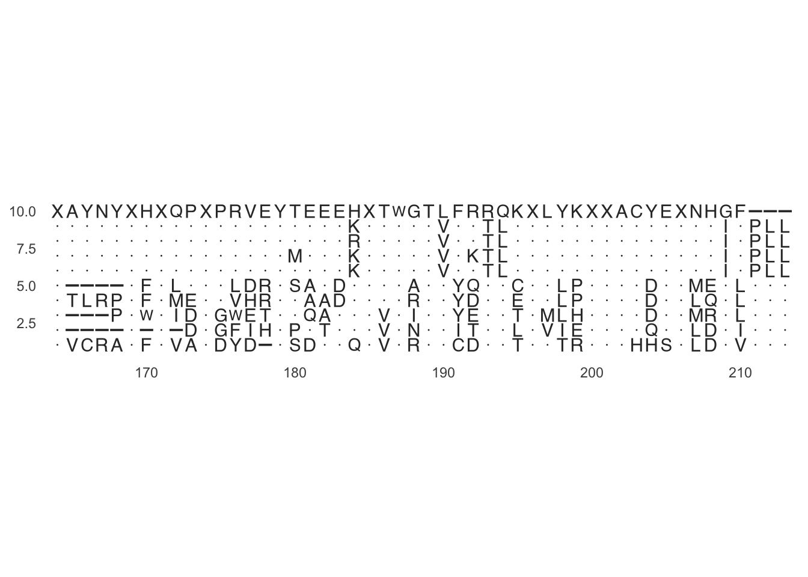
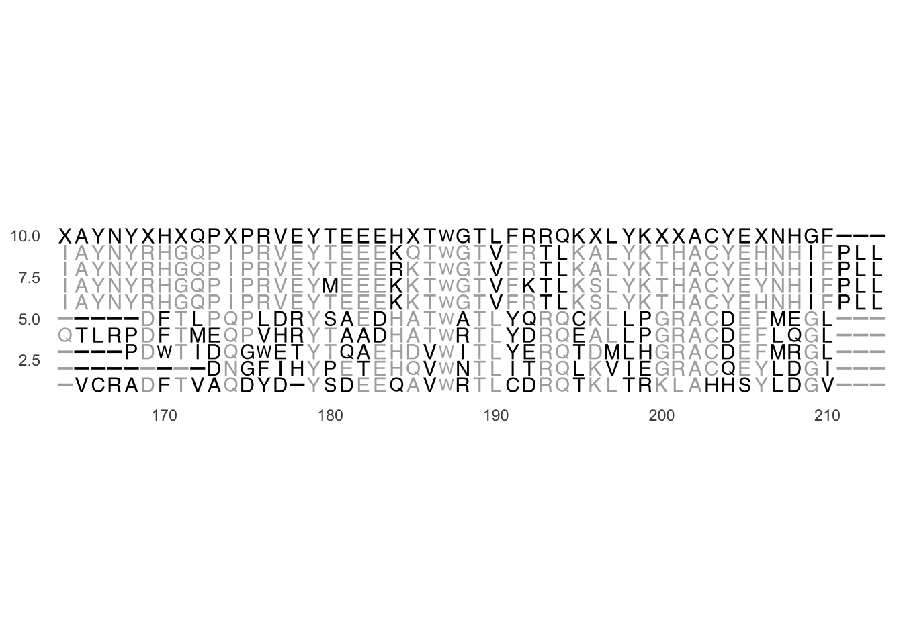
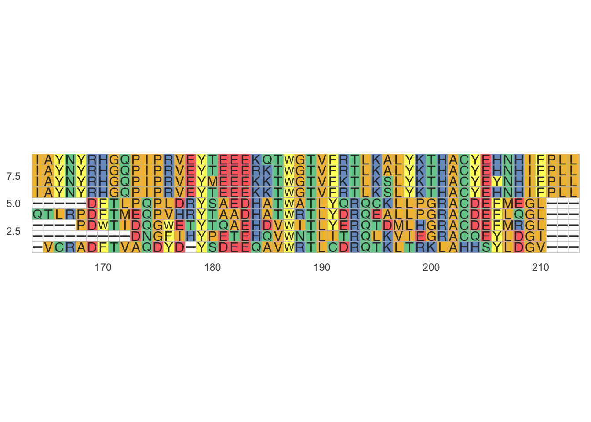
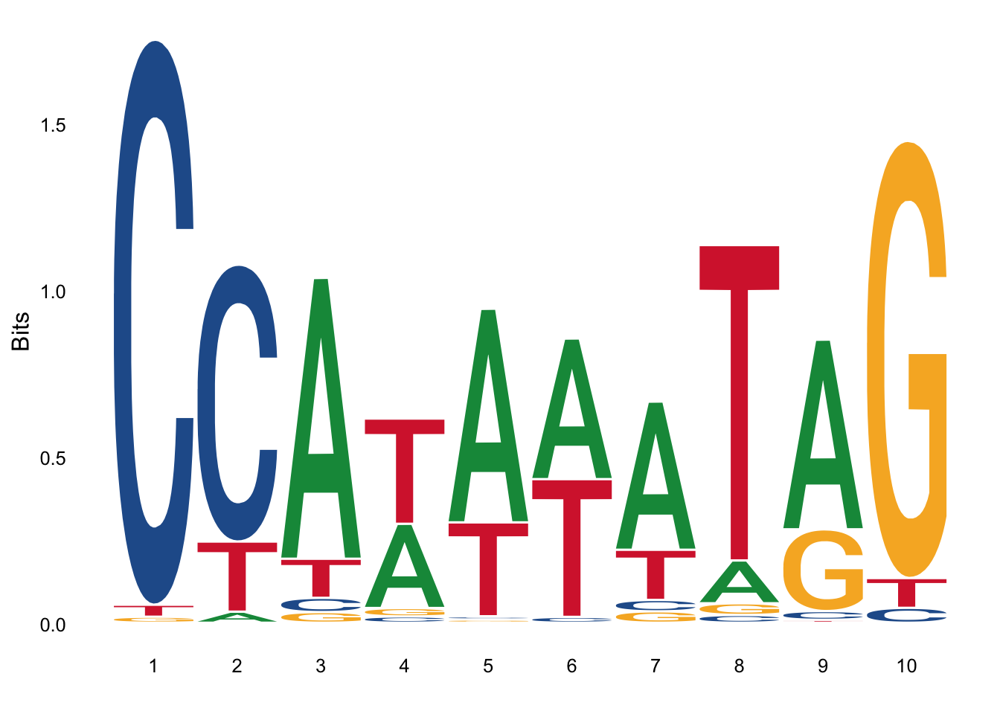

17 S
17.1 Structural Classification of Proteins database (SCOP)
Adapted from Wikipedia https://en.wikipedia.org/wiki/Structural_Classification_of_Proteins_database
The Structural Classification of Proteins (SCOP) database is a largely manual classification of protein structural domains based on similarities of their structures and amino acid sequences. A motivation for this classification is to determine the evolutionary relationship between proteins. Proteins with the same shapes but having little sequence or functional similarity are placed in different superfamilies, and are assumed to have only a very distant common ancestor. Proteins having the same shape and some similarity of sequence and/or function are placed in “families”, and are assumed to have a closer common ancestor.
Similar to CATH and Pfam databases, SCOP provides a classification of individual structural domains of proteins, rather than a classification of the entire proteins which may include a significant number of different domains.
The SCOP database is freely accessible on the internet. SCOP was created in 1994 in the Centre for Protein Engineering and the Laboratory of Molecular Biology (3). It was maintained by Alexey G. Murzin and his colleagues in the Centre for Protein Engineering until its closure in 2010 and subsequently at the Laboratory of Molecular Biology in Cambridge, England (4, 5, 6, 1).
17.1.1 Hierarchical organisation
The source of protein structures is the Protein Data Bank. The unit of classification of structure in SCOP is the protein domain. What the SCOP authors mean by “domain” is suggested by their statement that small proteins and most medium-sized ones have just one domain (8), and by the observation that human hemoglobin (9), which has an α2β2 structure, is assigned two SCOP domains, one for the α and one for the β subunit.
The shapes of domains are called “folds” in SCOP. Domains belonging to the same fold have the same major secondary structures in the same arrangement with the same topological connections. 1195 folds are given in SCOP version 1.75.
17.1.2 Superfamilies
Domains within a fold are classified into superfamilies. This is a largest grouping of proteins for which structural similarity is sufficient to indicate evolutionary relatedness and therefore share a common ancestor. However, this ancestor is presumed to be distant, because the different members of a superfamily have low sequence identities. For example, the two superfamilies of the “Globin-like” fold are: the Globin superfamily and alpha-helical ferredoxin superfamily.
17.1.3 Families
Protein families are more closely related than superfamilies. Domains are placed in the same family if that have either:
- less than 30% sequence identity
- some sequence identity (e.g., 15%) AND perform the same function
The similarity in sequence and structure is evidence that these proteins have a closer evolutionary relationship than do proteins in the same superfamily. Sequence tools, such as BLAST, are used to assist in placing domains into superfamilies and families.
17.1.4 PDB entry domains
OPTIONAL
A “TaxId” is the taxonomy ID number and links to the NCBI taxonomy browser, which provides more information about the species to which the protein belongs. Clicking on a species or isoform brings up a list of domains. For example, the “Hemoglobin, alpha-chain from Human (Homo sapiens)” protein has >190 solved protein structures, such as 2dn3 (complexed with cmo), and 2dn1 (complexed with hem, mbn, oxy). Clicking on the PDB numbers is supposed to display the structure of the molecule, but the links are currently broken (links work in pre-SCOP).
17.2 Sequence alignment
Adapated from Wikipedia https://en.wikipedia.org/wiki/Sequence_alignment
In bioinformatics, a sequence alignment is a way of arranging the sequences of DNA, RNA, or protein to identify regions of similarity that may be a consequence of functional, structural, or evolutionary relationships between the sequences (1). Aligned sequences of nucleotide or amino acid residues are typically represented as rows within a grid or matrix. Gaps are inserted between the residues so that identical or similar characters are aligned in successive columns.
17.2.1 Interpretation
If two sequences in an alignment share a common ancestor, mismatches can be interpreted as point mutations and gaps as indels (that is, insertion or deletion mutations) introduced in one or both lineages in the time since they diverged from one another. In sequence alignments of proteins, the degree of similarity between amino acids occupying a particular position in the sequence can be interpreted as a rough measure of how conserved a particular region or sequence motif is among lineages. The absence of substitutions, or the presence of only very conservative substitutions (that is, the substitution of amino acids whose side chains have similar biochemical properties) in a particular region of the sequence, suggest (3) that this region has structural or functional importance. Although DNA and RNA nucleotide bases are more similar to each other than are amino acids, the conservation of base pairs can indicate a similar functional or structural role.
17.2.2 Alignment methods
Very short or very similar sequences can be aligned by hand. However, most interesting problems require the alignment of lengthy, highly variable or extremely numerous sequences that cannot be aligned solely by human effort. Instead, human knowledge is applied in constructing algorithms to produce high-quality sequence alignments, and occasionally in adjusting the final results to reflect patterns that are difficult to represent algorithmically (especially in the case of nucleotide sequences).
Computational approaches to sequence alignment generally fall into two categories: global alignments and local alignments. Calculating a global alignment is a form of global optimization that “forces” the alignment to span the entire length of all sequences. By contrast, local alignments identify regions of similarity within long sequences that are often widely divergent overall. Local alignments are often preferable, but can be more difficult to calculate because of the additional challenge of identifying isolated regions of high similarity (4). BLAST searches are an example of local alignment.
17.3 Representations
Alignments are commonly represented both graphically and in text format. In almost all sequence alignment representations, sequences are written in rows arranged so that aligned residues appear in successive columns.
library(ggmsa)## Registered S3 methods overwritten by 'ggalt':
## method from
## grid.draw.absoluteGrob ggplot2
## grobHeight.absoluteGrob ggplot2
## grobWidth.absoluteGrob ggplot2
## grobX.absoluteGrob ggplot2
## grobY.absoluteGrob ggplot2fasta <- system.file("extdata", "sample.fasta", package = "ggmsa")
ggmsa(fasta, 164, 213, color="Chemistry_AA", none_bg = T,
consensus_views = T,
use_dot = T) Figure 1: Dots * for concensus
library(ggmsa)
fasta <- system.file("extdata", "sample.fasta", package = "ggmsa")
ggmsa(fasta, 164, 213, color="Chemistry_AA", none_bg = T,
consensus_views = T,
use_dot = F) Figure 2: Pipes (|) for consensus
In text formats, aligned columns containing identical or similar characters are indicated with a system of conservation symbols. In the image above, an asterisk (*) is used to show identity between two columns. Some programs use the pipe symbol (|). Other symbols that may be used include a colon for conservative substitutions and a period for semiconservative substitutions.
library(ggmsa)
# fasta <- system.file("extdata", "sample.fasta", package = "ggmsa")
ggmsa(fasta, 164, 213, color="Chemistry_AA"
#none_bg = T
)
Many sequence visualization programs also use color to display information about the properties of the individual sequence elements; in DNA and RNA sequences, this equates to assigning each nucleotide its own color. In protein alignments, such as the one in the image below, color is often used to indicate amino acid properties to aid in judging the conservation of a given amino acid substitution. For multiple sequences the last row in each column is often the consensus sequence determined by the alignment; the consensus sequence is also often represented in graphical format with a sequence logo in which the size of each nucleotide or amino acid letter corresponds to its degree of conservation (5).
library(ggseqlogo)
data(ggseqlogo_sample)
ggseqlogo( seqs_dna[[1]] )## Warning: `guides(<scale> = FALSE)` is deprecated. Please use `guides(<scale> =
## "none")` instead. Figure 3: Sequence log
This section is optional:
Sequence alignments can be stored in a wide variety of text-based file formats, many of which were originally developed in conjunction with a specific alignment program or implementation. Most web-based tools allow a limited number of input and output formats, such as FASTA format and GenBank format and the output is not easily editable. Several conversion programs that provide graphical and/or command line interfaces are available, such as READSEQ and EMBOSS. There are also several programming packages which provide this conversion functionality, such as BioPython, BioRuby and BioPerl. The SAM/BAM files use the CIGAR (Compact Idiosyncratic Gapped Alignment Report) string format to represent an alignment of a sequence to a reference by encoding a sequence of events (e.g. match/mismatch, insertions, deletions).[6]
17.3.1 Global and local alignments
Global alignments, which attempt to align every residue in every sequence, are most useful when the sequences in the query set are similar and of roughly equal size. (This does not mean global alignments cannot start and/or end in gaps.) A general global alignment technique is the Needleman–Wunsch algorithm, which is based on an approach known as dynamic programming. Local alignments are more useful for dissimilar sequences that are suspected to contain regions of similarity or similar sequence motifs within their larger sequence context. The Smith–Waterman algorithm is a general local alignment method based on the same dynamic programming scheme but with additional choices to start and end at any place (4).
17.3.2 Pairwise alignment
Pairwise sequence alignment methods are used to find the best-matching piecewise (local or global) alignments of two query sequences. Pairwise alignments can only be used between two sequences at a time, but they are efficient to calculate and are often used for methods that do not require extreme precision (such as searching a database for sequences with high similarity to a query).
The three primary methods of producing pairwise alignments are (1)
- graphic dot-matrix methods
- dynamic programming,
- and word methods
Multiple sequence alignment techniques can also begin by aligning pairs of sequences. Although each method has its individual strengths and weaknesses, all three pairwise methods have difficulty with highly repetitive sequences of low information content - especially where the number of repetitions differ in the two sequences to be aligned.
17.3.3 Dot-matrix methods
The dot-matrix approach, which implicitly produces a family of alignments for individual sequence regions, is qualitative and conceptually simple, though time-consuming to analyze on a large scale. In the absence of noise, it can be easy to visually identify certain sequence features—such as insertions, deletions, repeats, or inverted repeats—from a dot-matrix plot. To construct a dot-matrix plot, the two sequences are written along the top row and leftmost column of a two-dimensional matrix and a dot is placed at any point where the characters in the appropriate columns match—this is a typical recurrence plot. Some implementations vary the size or intensity of the dot depending on the degree of similarity of the two characters, to accommodate conservative substitutions. The dot plots of very closely related sequences will appear as a single line along the matrix’s main diagonal.
Problems with dot plots as an information display technique include: noise, lack of clarity, non-intuitiveness, difficulty extracting match summary statistics and match positions on the two sequences. There is also much wasted space where the match data is inherently duplicated across the diagonal and most of the actual area of the plot is taken up by either empty space or noise, and, finally, dot-plots are limited to two sequences. None of these limitations apply to Miropeats alignment diagrams but they have their own particular flaws.
Dot plots can also be used to assess repetitiveness in a single sequence. A sequence can be plotted against itself and regions that share significant similarities will appear as lines off the main diagonal. This effect can occur when a protein consists of multiple similar structural domains.
17.3.4 Dynamic programming
The technique of “dynamic programming” can be applied to produce global alignments via the Needleman-Wunsch algorithm, and local alignments via the Smith-Waterman algorithm. In typical usage, protein alignments use a substitution matrix to assign scores to amino-acid matches or mismatches, and a gap penalty for matching an amino acid in one sequence to a gap in the other.
Substitution matrices are symmetric matrices that assign high scores to amino acids that are more chemically similar or which substitutions are most common. Low values are assigned to chemically dissimilar amino acids / unlikely substitutions.
## A R N D C Q E G H I L K M F P S T W Y V B J
## A 5 NA NA NA NA NA NA NA NA NA NA NA NA NA NA NA NA NA NA NA NA NA
## R -2 7 NA NA NA NA NA NA NA NA NA NA NA NA NA NA NA NA NA NA NA NA
## N -1 0 6 NA NA NA NA NA NA NA NA NA NA NA NA NA NA NA NA NA NA NA
## D -2 -1 2 7 NA NA NA NA NA NA NA NA NA NA NA NA NA NA NA NA NA NA
## C -1 -3 -2 -3 12 NA NA NA NA NA NA NA NA NA NA NA NA NA NA NA NA NA
## Q -1 1 0 0 -3 6 NA NA NA NA NA NA NA NA NA NA NA NA NA NA NA NA
## E -1 0 0 2 -3 2 6 NA NA NA NA NA NA NA NA NA NA NA NA NA NA NA
## G 0 -2 0 -1 -3 -2 -2 7 NA NA NA NA NA NA NA NA NA NA NA NA NA NA
## H -2 0 1 0 -3 1 0 -2 10 NA NA NA NA NA NA NA NA NA NA NA NA NA
## I -1 -3 -2 -4 -3 -2 -3 -4 -3 5 NA NA NA NA NA NA NA NA NA NA NA NA
## L -1 -2 -3 -3 -2 -2 -2 -3 -2 2 5 NA NA NA NA NA NA NA NA NA NA NA
## K -1 3 0 0 -3 1 1 -2 -1 -3 -3 5 NA NA NA NA NA NA NA NA NA NA
## M -1 -1 -2 -3 -2 0 -2 -2 0 2 2 -1 6 NA NA NA NA NA NA NA NA NA
## F -2 -2 -2 -4 -2 -4 -3 -3 -2 0 1 -3 0 8 NA NA NA NA NA NA NA NA
## P -1 -2 -2 -1 -4 -1 0 -2 -2 -2 -3 -1 -2 -3 9 NA NA NA NA NA NA NA
## S 1 -1 1 0 -1 0 0 0 -1 -2 -3 -1 -2 -2 -1 4 NA NA NA NA NA NA
## T 0 -1 0 -1 -1 -1 -1 -2 -2 -1 -1 -1 -1 -1 -1 2 5 NA NA NA NA NA
## W -2 -2 -4 -4 -5 -2 -3 -2 -3 -2 -2 -2 -2 1 -3 -4 -3 15 NA NA NA NA
## Y -2 -1 -2 -2 -3 -1 -2 -3 2 0 0 -1 0 3 -3 -2 -1 3 8 NA NA NA
## V 0 -2 -3 -3 -1 -3 -3 -3 -3 3 1 -2 1 0 -3 -1 0 -3 -1 5 NA NA
## B -1 -1 5 6 -2 0 1 -1 0 -3 -3 0 -2 -3 -2 0 0 -4 -2 -3 5 NA
## J -1 -3 -3 -3 -2 -2 -3 -4 -2 4 4 -3 2 1 -3 -2 -1 -2 0 2 -3 4Figure 1: The BLOSUM45 substitution matrix
nucleotideSubstitutionMatrix(match = 1, mismatch = -1, baseOnly = T, type = "DNA")## A C G T
## A 1 -1 -1 -1
## C -1 1 -1 -1
## G -1 -1 1 -1
## T -1 -1 -1 1DNA and RNA alignments may use a scoring matrix, but in practice often simply assign a positive match score when both sequences have the same base, a negative mismatch score when they are different, and a negative gap penalty.
A common extension to standard linear gap costs, is the usage of two different gap penalties for opening a gap and for extending a gap. Typically the former is much larger than the latter, e.g. -10 for gap open and -2 for gap extension. Thus, the number of gaps in an alignment is usually reduced and residues and gaps are kept together, which typically makes more biological sense.
17.3.5 Word methods
OPTIONAL
Word methods are approximate methods that are not guaranteed to find an optimal alignment solution, but are significantly more efficient than dynamic programming. These methods are especially useful in large-scale database searches where it is understood that a large proportion of the candidate sequences will have essentially no significant match with the query sequence.
Word methods are best known for their implementation in the database search tools FASTA and the BLAST family (1). Word methods identify a series of short, nonoverlapping subsequences (“words”) in the query sequence that are then matched to candidate database sequences. The relative positions of the word in the two sequences being compared are subtracted to obtain an offset; this will indicate a region of alignment if multiple distinct words produce the same offset. Only if this region is detected do these methods apply more sensitive alignment criteria; thus, many unnecessary comparisons with sequences of no appreciable similarity are eliminated.
BLAST uses a word search of length k and evaluates only the most significant word matches. Most BLAST implementations use a fixed default word length that is optimized for the query and database type, and that is changed only under special circumstances, such as when searching with repetitive or very short query sequences. Implementations can be found via a number of web portals, such as EMBL FASTA and NCBI BLAST.
17.3.6 Multiple sequence alignment
Multiple sequence alignment (MSA) is an extension of pairwise alignment to incorporate more than two sequences at a time. Multiple alignment methods try to align all of the sequences in a given query set. Multiple alignments are often used in identifying conserved sequence regions across a group of sequences hypothesized to be evolutionarily related. Such conserved sequence motifs can be used in conjunction with structural and mechanistic information to locate the catalytic active sites of enzymes. MSA therefore occur regularly in molecular biology and biochemistry publications.
Alignments are also used to aid in establishing evolutionary relationships by constructing phylogenetic trees. Multiple sequence alignments are computationally difficult to produce (most formulations of the problem lead to NP-complete combinatorial optimization problems; 10, 11). Nevertheless, the utility of these alignments in bioinformatics has led to the development of a variety of methods suitable for aligning three or more sequences.
17.3.7 Phylogenetic analysis
Phylogenetics and sequence alignment are closely related fields due to the shared necessity of evaluating sequence relatedness (25). The field of phylogenetics makes extensive use of sequence alignments in the construction and interpretation of phylogenetic trees, which are used to classify the evolutionary relationships between homologous genes represented in the genomes of divergent species. The degree to which sequences in a query set differ is qualitatively related to the sequences’ evolutionary distance from one another. Roughly speaking, high sequence identity suggests that the sequences in question have a comparatively young most recent common ancestor, while low identity suggests that the divergence is more ancient.
OPTIONAL
This approximation, which reflects the “molecular clock” hypothesis that a roughly constant rate of evolutionary change can be used to extrapolate the elapsed time since two genes first diverged (that is, the coalescence time), assumes that the effects of mutation and selection are constant across sequence lineages. Therefore, it does not account for possible difference species in the possible functional conservation of specific regions in a sequence. (In the case of nucleotide sequences, the molecular clock hypothesis in its most basic form also discounts the difference in acceptance rates between silent mutations that do not alter the meaning of a given codon and other mutations that result in a different amino acid being incorporated into the protein). More statistically accurate methods allow the evolutionary rate on each branch of the phylogenetic tree to vary, thus producing better estimates of coalescence times for genes.
Progressive multiple alignment techniques produce a phylogenetic tree by necessity because they incorporate sequences into the growing alignment in order of relatedness. Other techniques that assemble multiple sequence alignments and phylogenetic trees score and sort trees first and calculate a multiple sequence alignment from the highest-scoring tree. Commonly used methods of phylogenetic tree construction are mainly heuristic because the problem of selecting the optimal tree, like the problem of selecting the optimal multiple sequence alignment, is NP-hard (26).
17.3.8 Assessment of significance
Sequence alignments are useful in bioinformatics for identifying sequence similarity, producing phylogenetic trees, and developing homology models of protein structures. However, the biological relevance of sequence alignments is not always clear. Alignments are often assumed to reflect a degree of evolutionary change between sequences descended from a common ancestor; however, it is formally possible that convergent evolution can occur to produce apparent similarity between proteins that are evolutionarily unrelated but perform similar functions and have similar structures.
In database searches such as BLAST, statistical methods can determine the likelihood of a particular alignment between sequences or sequence regions arising by chance given the size and composition of the database being searched. These values can vary significantly depending on the search space. In particular, the likelihood of finding a given alignment by chance increases if the database consists only of sequences from the same organism as the query sequence. Repetitive sequences in the database or query can also distort both the search results and the assessment of statistical significance; BLAST automatically filters such repetitive sequences in the query to avoid apparent hits that are statistical artifacts.
17.3.8.1 Assessment of credibility
Statistical significance indicates the probability that an alignment of a given quality could arise by chance, but does not indicate how much superior a given alignment is to alternative alignments of the same sequences. Measures of alignment credibility indicate the extent to which the best scoring alignments for a given pair of sequences are substantially similar.
17.3.8.2 Scoring functions
The choice of a scoring function that reflects biological or statistical observations about known sequences is important to producing good alignments. Protein sequences are frequently aligned using substitution matrices that reflect the probabilities of given character-to-character substitutions. A series of matrices called PAM matrices (Point Accepted Mutation matrices, originally defined by Margaret Dayhoff and sometimes referred to as “Dayhoff matrices”) explicitly encode evolutionary approximations regarding the rates and probabilities of particular amino acid mutations. Another common series of scoring matrices, known as BLOSUM (Blocks Substitution Matrix), encodes empirically derived substitution probabilities. Variants of both types of matrices are used to detect sequences with differing levels of divergence, thus allowing users of BLAST or FASTA to restrict searches to more closely related matches or expand to detect more divergent sequences. Gap penalties account for the introduction of a gap - on the evolutionary model, an insertion or deletion mutation - in both nucleotide and protein sequences, and therefore the penalty values should be proportional to the expected rate of such mutations. The quality of the alignments produced therefore depends on the quality of the scoring function.
It can be very useful and instructive to try the same alignment several times with different choices for scoring matrix and/or gap penalty values and compare the results. Regions where the solution is weak or non-unique can often be identified by observing which regions of the alignment are robust to variations in alignment parameters.
17.3.9 Other biological uses
Sequenced RNA, such as expressed sequence tags and full-length mRNAs, can be aligned to a sequenced genome to find where there are genes and get information about alternative splicing (35) and RNA editing (36). Sequence alignment is also a part of genome assembly, where sequences are aligned to find overlap so that contigs (long stretches of sequence) can be formed (37). Another use is SNP analysis, where sequences from different individuals are aligned to find single basepairs that are often different in a population (38).
17.3.10 References
- Mount DM. (2004). Bioinformatics: Sequence and Genome Analysis (2nd ed.). Cold Spring Harbor Laboratory Press: Cold Spring Harbor, NY. ISBN 978-0-87969-608-5.
- “Clustal FAQ Symbols”. Clustal. Archived from the original on 24 October 2016. Retrieved 8 December 2014.
- Ng PC; Henikoff S (May 2001). “Predicting deleterious amino acid substitutions”. Genome Res. 11 (5): 863–74. doi:10.1101/gr.176601. PMC 311071. PMID 11337480.
- Polyanovsky, V. O.; Roytberg, M. A.; Tumanyan, V. G. (2011). “Comparative analysis of the quality of a global algorithm and a local algorithm for alignment of two sequences”. Algorithms for Molecular Biology. 6 (1): 25. doi:10.1186/1748-7188-6-25. PMC 3223492. PMID 22032267. S2CID 2658261.
- Schneider TD; Stephens RM (1990). “Sequence logos: a new way to display consensus sequences”. Nucleic Acids Res. 18 (20): 6097–6100. doi:10.1093/nar/18.20.6097. PMC 332411. PMID 2172928.
- “Sequence Alignment/Map Format Specification” (PDF).
- Brudno M; Malde S; Poliakov A; Do CB; Couronne O; Dubchak I; Batzoglou S (2003). “Glocal alignment: finding rearrangements during alignment”. Bioinformatics. 19. Suppl 1 (90001): i54–62. doi:10.1093/bioinformatics/btg1005. PMID 12855437.
- Delcher, A. L.; Kasif, S.; Fleishmann, R.D.; Peterson, J.; White, O.; Salzberg, S.L. (1999). “Alignment of whole genomes”. Nucleic Acids Research. 27 (11): 2369–2376. doi:10.1093/nar/30.11.2478. PMC 148804. PMID 10325427.
- Wing-Kin, Sung (2010). Algorithms in Bioinformatics: A Practical Introduction (First ed.). Boca Raton: Chapman & Hall/CRC Press. ISBN 978-1420070330.
- Wang L; Jiang T. (1994). “On the complexity of multiple sequence alignment”. J Comput Biol. 1 (4): 337–48. CiteSeerX 10.1.1.408.894. doi:10.1089/cmb.1994.1.337. PMID 8790475.
- Elias, Isaac (2006). “Settling the intractability of multiple alignment”. J Comput Biol. 13 (7): 1323–1339. CiteSeerX 10.1.1.6.256. doi:10.1089/cmb.2006.13.1323. PMID 17037961.
- Lipman DJ; Altschul SF; Kececioglu JD (1989). “A tool for multiple sequence alignment”. Proc Natl Acad Sci USA. 86 (12): 4412–5. Bibcode:1989PNAS…86.4412L. doi:10.1073/pnas.86.12.4412. PMC 287279. PMID 2734293.
- Higgins DG, Sharp PM (1988). “CLUSTAL: a package for performing multiple sequence alignment on a microcomputer”. Gene. 73 (1): 237–44. doi:10.1016/0378-1119(88)90330-7. PMID 3243435.
- Thompson JD; Higgins DG; Gibson TJ. (1994). “CLUSTAL W: improving the sensitivity of progressive multiple sequence alignment through sequence weighting, position-specific gap penalties and weight matrix choice”. Nucleic Acids Res. 22 (22): 4673–80. doi:10.1093/nar/22.22.4673. PMC 308517. PMID 7984417.
- Chenna R; Sugawara H; Koike T; Lopez R; Gibson TJ; Higgins DG; Thompson JD. (2003). “Multiple sequence alignment with the Clustal series of programs”. Nucleic Acids Res. 31 (13): 3497–500. doi:10.1093/nar/gkg500. PMC 168907. PMID 12824352.
- Notredame C; Higgins DG; Heringa J. (2000). “T-Coffee: A novel method for fast and accurate multiple sequence alignment”. J Mol Biol. 302 (1): 205–17. doi:10.1006/jmbi.2000.4042. PMID 10964570. S2CID 10189971.
- Hirosawa M; Totoki Y; Hoshida M; Ishikawa M. (1995). “Comprehensive study on iterative algorithms of multiple sequence alignment”. Comput Appl Biosci. 11 (1): 13–8. doi:10.1093/bioinformatics/11.1.13. PMID 7796270.
- Karplus K; Barrett C; Hughey R. (1998). “Hidden Markov models for detecting remote protein homologies”. Bioinformatics. 14 (10): 846–856. doi:10.1093/bioinformatics/14.10.846. PMID 9927713.
- Chothia C; Lesk AM. (April 1986). “The relation between the divergence of sequence and structure in proteins”. EMBO J. 5 (4): 823–6. doi:10.1002/j.1460-2075.1986.tb04288.x. PMC 1166865. PMID 3709526.
- Zhang Y; Skolnick J. (2005). “The protein structure prediction problem could be solved using the current PDB library”. Proc Natl Acad Sci USA. 102 (4): 1029–34. Bibcode:2005PNAS..102.1029Z. doi:10.1073/pnas.0407152101. PMC 545829. PMID 15653774.
- Holm L; Sander C (1996). “Mapping the protein universe”. Science. 273 (5275): 595–603. Bibcode:1996Sci…273..595H. doi:10.1126/science.273.5275.595. PMID 8662544. S2CID 7509134.
- Taylor WR; Flores TP; Orengo CA. (1994). “Multiple protein structure alignment”. Protein Sci. 3 (10): 1858–70. doi:10.1002/pro.5560031025. PMC 2142613. PMID 7849601.
- Orengo CA; Michie AD; Jones S; Jones DT; Swindells MB; Thornton JM (1997). “CATH–a hierarchic classification of protein domain structures”. Structure. 5 (8): 1093–108. doi:10.1016/S0969-2126(97)00260-8. PMID 9309224.
- Shindyalov IN; Bourne PE. (1998). “Protein structure alignment by incremental combinatorial extension (CE) of the optimal path”. Protein Eng. 11 (9): 739–47. doi:10.1093/protein/11.9.739. PMID 9796821.
- Ortet P; Bastien O (2010). “Where Does the Alignment Score Distribution Shape Come from?”. Evolutionary Bioinformatics. 6: 159–187. doi:10.4137/EBO.S5875. PMC 3023300. PMID 21258650.
- Felsenstein J. (2004). Inferring Phylogenies. Sinauer Associates: Sunderland, MA. ISBN 978-0-87893-177-4.
- Altschul SF; Gish W (1996). Local Alignment Statistics. Meth.Enz. Methods in Enzymology. 266. pp. 460–480. doi:10.1016/S0076-6879(96)66029-7. ISBN 9780121821678. PMID 8743700.
- Hartmann AK (2002). “Sampling rare events: statistics of local sequence alignments”. Phys. Rev. E. 65 (5): 056102. arXiv:cond-mat/0108201. Bibcode:2002PhRvE..65e6102H. doi:10.1103/PhysRevE.65.056102. PMID 12059642. S2CID 193085.
- Newberg LA (2008). “Significance of gapped sequence alignments”. J Comput Biol. 15 (9): 1187–1194. doi:10.1089/cmb.2008.0125. PMC 2737730. PMID 18973434.
- Eddy SR; Rost, Burkhard (2008). Rost, Burkhard (ed.). “A probabilistic model of local sequence alignment that simplifies statistical significance estimation”. PLOS Comput Biol. 4 (5): e1000069. Bibcode:2008PLSCB…4E0069E. doi:10.1371/journal.pcbi.1000069. PMC 2396288. PMID 18516236. S2CID 15640896.
- Bastien O; Aude JC; Roy S; Marechal E (2004). “Fundamentals of massive automatic pairwise alignments of protein sequences: theoretical significance of Z-value statistics”. Bioinformatics. 20 (4): 534–537. doi:10.1093/bioinformatics/btg440. PMID 14990449.
- Agrawal A; Huang X (2011). “Pairwise Statistical Significance of Local Sequence Alignment Using Sequence-Specific and Position-Specific Substitution Matrices”. IEEE/ACM Transactions on Computational Biology and Bioinformatics. 8 (1): 194–205. doi:10.1109/TCBB.2009.69. PMID 21071807. S2CID 6559731.
- Agrawal A; Brendel VP; Huang X (2008). “Pairwise statistical significance and empirical determination of effective gap opening penalties for protein local sequence alignment”. International Journal of Computational Biology and Drug Design. 1 (4): 347–367. doi:10.1504/IJCBDD.2008.022207. PMID 20063463. Archived from the original on 28 January 2013.
- Newberg LA; Lawrence CE (2009). “Exact Calculation of Distributions on Integers, with Application to Sequence Alignment”. J Comput Biol. 16 (1): 1–18. doi:10.1089/cmb.2008.0137. PMC 2858568. PMID 19119992.
- Kim N; Lee C (2008). Bioinformatics detection of alternative splicing. Methods in Molecular Biology. 452. pp. 179–97. doi:10.1007/978-1-60327-159-2_9. ISBN 978-1-58829-707-5. PMID 18566765.
- Li JB, Levanon EY, Yoon JK, et al. (May 2009). “Genome-wide identification of human RNA editing sites by parallel DNA capturing and sequencing”. Science. 324 (5931): 1210–3. Bibcode:2009Sci…324.1210L. doi:10.1126/science.1170995. PMID 19478186. S2CID 31148824.
- Blazewicz J, Bryja M, Figlerowicz M, et al. (June 2009). “Whole genome assembly from 454 sequencing output via modified DNA graph concept”. Comput Biol Chem. 33 (3): 224–30. doi:10.1016/j.compbiolchem.2009.04.005. PMID 19477687.
- Duran C; Appleby N; Vardy M; Imelfort M; Edwards D; Batley J (May 2009). “Single nucleotide polymorphism discovery in barley using autoSNPdb”. Plant Biotechnol. J. 7 (4): 326–33. doi:10.1111/j.1467-7652.2009.00407.x. PMID 19386041.
- Abbott A.; Tsay A. (2000). “Sequence Analysis and Optimal Matching Methods in Sociology, Review and Prospect”. Sociological Methods and Research. 29 (1): 3–33. doi:10.1177/0049124100029001001. S2CID 121097811.
- Barzilay R; Lee L. (2002). “Bootstrapping Lexical Choice via Multiple-Sequence Alignment” (PDF). Proceedings of the Conference on Empirical Methods in Natural Language Processing (EMNLP). 10: 164–171. arXiv:cs/0205065. Bibcode:2002cs……..5065B. doi:10.3115/1118693.1118715. S2CID 7521453.
- Kondrak, Grzegorz (2002). “Algorithms for Language Reconstruction” (PDF). University of Toronto, Ontario. Archived from the original (PDF) on 17 December 2008. Retrieved 21 January 2007.
- Prinzie A.; D. Van den Poel (2006). “Incorporating sequential information into traditional classification models by using an element/position-sensitive SAM”. Decision Support Systems. 42 (2): 508–526. doi:10.1016/j.dss.2005.02.004. See also Prinzie and Van den Poel’s paper Prinzie, A; Vandenpoel, D (2007). “Predicting home-appliance acquisition sequences: Markov/Markov for Discrimination and survival analysis for modeling sequential information in NPTB models”. Decision Support Systems. 44 (1): 28–45. doi:10.1016/j.dss.2007.02.008.
- EMBL-EBI. “ClustalW2 < Multiple Sequence Alignment < EMBL-EBI”. www.EBI.ac.uk. Retrieved 12 June 2017.
- T-coffee
- “BLAST: Basic Local Alignment Search Tool”. blast.ncbi.nlm.NIH.gov. Retrieved 12 June 2017.
- “UVA FASTA Server”. fasta.bioch.Virginia.edu. Retrieved 12 June 2017.
- Thompson JD; Plewniak F; Poch O (1999). “BAliBASE: a benchmark alignment database for the evaluation of multiple alignment programs”. Bioinformatics. 15 (1): 87–8. doi:10.1093/bioinformatics/15.1.87. PMID 10068696.
- BAliBASE
- Thompson JD; Plewniak F; Poch O. (1999). “A comprehensive comparison of multiple sequence alignment programs”. Nucleic Acids Res. 27 (13): 2682–90. doi:10.1093/nar/27.13.2682. PMC 148477. PMID 10373585.
- “Multiple sequence alignment: Strap”. 3d-alignment.eu. Retrieved 12 June 2017.
17.4 Talking Glossary U03: Shotgun sequencing (1 min)
Now just called “sequencing”
Introduction: “Shotgun sequencing is a laboratory technique for determining the DNA sequence of an organism’s genome. The method involves breaking the genome into a collection of small DNA fragments that are sequenced individually. A computer program looks for overlaps in the DNA sequences and uses them to place the individual fragments in their correct order to reconstitute the genome.”
Transcript: “The most efficient way to sequence a large piece of DNA involves a process known as shotgun sequencing. For this, the starting DNA is broken up randomly into many smaller pieces, sort of in a shotgun fashion, with each of those pieces then sequenced individually. The resulting sequence reads generated from the different pieces are then analyzed by a computer program, looking for stretches of sequence from different reads that are identical with one another. When identical regions are identified, they are overlapped with one another, allowing the two sequence reads to be stitched together. This computer process is repeated over and over and over again, eventually yielding the complete sequence of the starting piece of DNA. The initial random fragmenting and reading of the DNA gave this approach the name”shotgun sequencing”. ”
Eric D. Green, M.D., Ph.D.
17.5 Talking Glossary: Sickle Cell Disease (4 min)
https://www.genome.gov/genetics-glossary/Sickle-Cell-Disease
Abstract: “Sickle cell disease is a hereditary disease seen most often among people of African ancestry. Caused by mutations in one of the genes that encode the hemoglobin protein, the disease is inherited as an autosomal recessive trait. The mutation causes the red blood cells to take on an unusual sickle shape. Individuals affected by sickle cell disease are chronically anemic and experience significant damage to their heart, lungs, and kidneys.”
Image: https://www.genome.gov/sites/default/files/tg/en/illustration/sickle_cell_disease.jpg
{kind=link}
Transcript: “Sickle cell disease is the first human inherited disease that was understood at the protein and the DNA level. Sickle cell is a disease that’s primarily seen in people of African descent. In studying the genomics of people from Africa, it’s very clear now that three different times during the history of the human race the mutation in the beta-globin gene that changes an amino acid at the sixth position of the protein, the same mutation has happened. And this has been expanded throughout history in Africa in three different groups and then migrated all over the world. Now, the mutation does not really affect the ability of beta-globin to participate with alpha-globin and make hemoglobin, and it doesn’t affect the ability to carry oxygen. In matter of fact, people who inherit a hemoglobin S gene from their mother and a hemoglobin S gene from their father, so their homozygous for hemoglobin S, have perfectly normal oxygen-carrying capacity of hemoglobin. The problems happen when the red cell containing hemoglobin S gets into the muscles or into your brain and discharges the oxygen. And what happens is that hemoglobin S has a tendency when the oxygen goes off to stick to each other, and they form these polymers. Now, when they get oxygen back on, they go back into solution. The difference between hemoglobin S and wild-type hemoglobin is that the wild-type hemoglobin is soluble when it’s got oxygen, and it’s also soluble when it doesn’t have oxygen. Now, if everything is working well, these polymers in people with sickle cell disease don’t get very big. But that can be worsened when you have extreme oxygen stress, and that’s what causes the characteristic sickle cells. The polymers get very, very long, and they stretch the cell out of shape. Now your spleen is very good at raking these cells out of the peripheral blood as they come through. And that’s what causes the anemia, and the old name for sickle cell was sickle cell anemia. However, though, short polymers are very, very dangerous. If you think of a red blood cell going through your veins and arteries and capillaries as a water balloon, you’ll see how it can squish itself down into a long cylinder to get through a capillary and flatten out like a pancake to get through areas in the spleen that kind of rake out the bad-shape red blood cells, and then to form right back to a regular water balloon shape to go into the arteries and veins. But if you have a red blood cell full of these small hemoglobin S polymers, it’s like having a water balloon full of ice chips, and as that goes through the capillaries and the small veins, it tears up the lining of these things, just as if you had a cut, and it activates your clotting response and micro-clots will form. And sometimes these get to be bigger and bigger clots, and so the real lethality in sickle cell disease is not from the anemia, it’s from this vascular disease. And so it’s very unfortunate that about one-third of people who are homozygous for hemoglobin S will have one or more strokes before they’re 10 years old. And in those fortunate few that are able to get to be adolescents, these clots can build up in the lungs and give a very severe disease called acute chest syndrome, which is basically emphysema or lung destruction from these obstructions. About one-third of the patients will live healthily to adulthood, but they have many problems with iron-overloaded organs, and their life span is significantly shorter. And it is simply amazing to me that this all comes from one very small change, changes in amino acid, that really isn’t having any effect on the normal function of the protein, but has big effects on all of the other systems in the body that the red cells pass through.”
David M. Bodine, Ph.D.
17.6 Medline: SNPs (single nucleotide polymorphism)
Adapted from: Medline: “What are single nucleotide polymorphisms (SNPs)?” https://medlineplus.gov/genetics/understanding/genomicresearch/snp/
Single nucleotide polymorphisms, frequently called SNPs (pronounced “snips”), are the most common type of genetic variation among people. Each SNP represents a difference in a single DNA building block, called a nucleotide. For example, a SNP may replace the nucleotide cytosine (C) with the nucleotide thymine (T) in a certain stretch of DNA.
SNPs occur normally throughout a person’s DNA. They occur almost once in every 1,000 nucleotides on average, which means there are roughly 4 to 5 million SNPs in a person’s genome. These variations may be unique or occur in many individuals; scientists have found more than 100 million SNPs in populations around the world. Most commonly, these variations are found in the DNA between genes. They can act as biological markers, helping scientists locate genes that are associated with disease. When SNPs occur within a gene or in a regulatory region near a gene, they may play a more direct role in disease by affecting the gene’s function.
Most SNPs have no effect on health or development. Some of these genetic differences, however, have proven to be very important in the study of human health. Researchers have found SNPs that may help predict an individual’s response to certain drugs, susceptibility to environmental factors such as toxins, and risk of developing particular diseases. SNPs can also be used to track the inheritance of disease genes within families. Future studies will work to identify SNPs associated with complex diseases such as heart disease, diabetes, and cancer.
17.7 Talking glossary: Somatic cells (0.75 min)
https://www.genome.gov/genetics-glossary/Somatic-Cells
Abstract: “A somatic cell is any cell of the body except sperm and egg cells. Somatic cells are diploid, meaning that they contain two sets of chromosomes, one inherited from each parent. Mutations in somatic cells can affect the individual, but they are not passed on to offspring.”
Image: https://www.genome.gov/sites/default/files/tg/en/illustration/somatic_cells.jpg
{kind=link}
Transcript: “Somatic cells is a fairly general term which refers to essentially all the cells of the body except for the germ line; the germ line being the cells in the sexual organs that produce sperm and eggs. So anything that doesn’t have the job of producing sperm or eggs is a somatic cell. It is very important, of course, for every living organism to be alive, but it contributes nothing in terms of inheritance through genetics, inheritance to the next generation. So it is only of use to the living organism and has no relation to anything that happens in the next generation of that organism.”
Shawn Burgess, Ph.D.
17.8 Sequence annotation
Adapted from Wikipedia, the free encyclopedia
https://en.wikipedia.org/wiki/DNA_annotation
Note: Wikipedia titles this “DNA annotation.” In my experience this phrase is not used; rather we refer to sequence annotation, genome annotation, or just annotation.
Genome annotation is the process of predicting the locations of genes and all of the coding regions in a genome and predicitng what those genes do. An annotation (irrespective of the context) is a note added by way of explanation or commentary. Once a genome is sequenced, it needs to be annotated to make sense of it.[1] For DNA annotation, a previously unknown sequence representation of genetic material is enriched with information of intron -exon boundaries, regulatory sequences , gene names and protein products. This annotation is stored in genomic databases.
17.8.1 Process
Genome annotation consists of two main steps:
- predicting coding elements on the genome , a process called gene prediction
- attaching biological information to these elements
Structural genomic annotation consists of the identification of genomic elements.
- ORFs [open reading frames] and their localization
- predicted coding regions
- predicted location of regulatory motifs (e.g. promoters)
- Functional annotation consists of attaching biological information to genomic elements.
17.9 Talking Glossary: Substitution mutation (1.75 min)
https://www.genome.gov/genetics-glossary/Substitution
Abstract: “Substitution is a type of mutation where one base pair is replaced by a different base pair. The term also refers to the replacement of one amino acid in a protein with a different amino acid.”
Transcript: “Subsititution refers to the replacement of one amino acid with another amino acid in a protein or the replacement of one nucleotide with another in DNA or RNA. Substitutions generally give rise to–or they always give rise to–either a polymorphism, that is, a difference between one person, one individual, in a population or another, or a special kind of polymorphism that we call a mutation. In either case, all individuals in the population originally had the same sequence of a gene. There were substitution events that resulted in a change in DNA sequence, which resulted in a change in RNA sequence, which then could result in a change in amino acid sequence. When that happens, that change in DNA sequence or amino acid sequence, or both, could have no effect on the protein, in which case the substitution is benign and has no functional effect. In other cases, if it changes the function of the protein, then it will be observed as either a functional polymorphism, something which increases the effectiveness of the protein product, and therefore would be evolutionarily selected for, or is bad–deleterious–in which case the person might die early and get evolutionarily selected against. Substitutions which lead to mutations, which lead to a deleterious outcome, that is the organism having difficulty with living or dying early, those we call mutations, but they’re the result of a certain kind of a substitution.”
Christopher P. Austin, M.D.